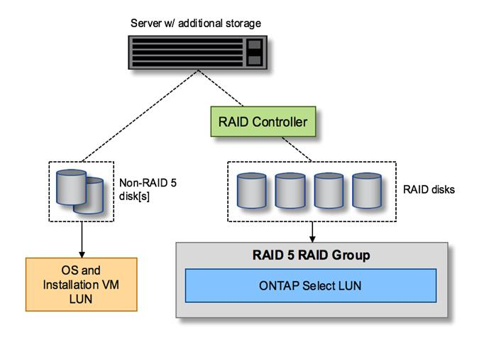
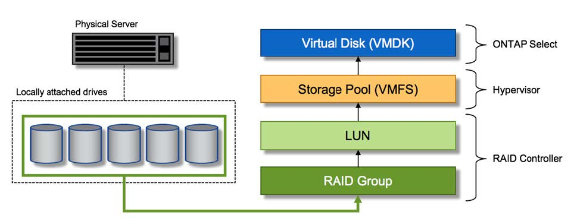

要求變更文件
要求變更文件 編輯此頁面
編輯此頁面 瞭解如何作出貢獻
瞭解如何作出貢獻本機附加儲存設備的硬體RAID服務
貢獻者
當有硬體RAID控制器可用ONTAP Select 時、即可將RAID服務移至硬體控制器、以提升寫入效能、並防止實體磁碟機故障。因此ONTAP Select 、針對整個叢集內所有節點的RAID保護是由本機附加的RAID控制器提供、而非ONTAP 透過支援此功能的軟體RAID提供。

|
由於實體RAID控制器為基礎磁碟機提供RAID分段功能、因此將支援使用RAID 0的實體資料集合體進行設定。ONTAP Select不支援其他RAID層級。 |
本機附加儲存設備的RAID控制器組態
所有提供ONTAP Select 支援儲存功能的本地附加磁碟、都必須位於RAID控制器後方。大部分的市售伺服器都有多種RAID控制器選項、可跨越多個價位、每個價位的功能層級各不相同。其目的是盡可能支援這些選項的數量、前提是這些選項符合控制器上的特定最低要求。
管理ONTAP Select 此類磁碟的RAID控制器必須符合下列需求：
-
硬體RAID控制器必須具有電池備份單元（BBU/Flash備援寫入快取（FBWC）、並支援12Gbps的處理量。
-
RAID控制器必須支援能夠承受至少一或兩個磁碟故障的模式（RAID 5和RAID 6）。
-
磁碟機快取必須設定為停用。
-
寫入原則必須設定為回寫模式、並在發生BBU/Flash故障時提供回寫功能。
-
讀取的I/O原則必須設定為快取。
所有提供ONTAP Select 支援儲存功能的本地附加磁碟、都必須放入執行RAID 5或RAID 6的RAID群組中。對於SAS磁碟機和SSD、使用最多24個磁碟機的RAID群組、ONTAP 讓NetApp能夠將傳入的讀取要求分散到更多的磁碟上。這樣做可大幅提升效能。使用SAS/SSD組態時、會針對單一LUN與多LUN組態進行效能測試。沒有發現顯著差異、因此為了簡化、NetApp建議您建立最少的LUN數量、以支援您的組態需求。
NL-SAS和SATA磁碟機需要一套不同的最佳實務做法。基於效能考量、磁碟的最小數量仍為8個、但RAID群組大小不應大於12個磁碟機。NetApp也建議每個RAID群組使用一個備援磁碟機；不過、所有RAID群組都可以使用全域備援磁碟機。例如、您可以每三個RAID群組使用兩個備援磁碟機、每個RAID群組包含八到十二個磁碟機。
|
|
舊版ESX的最大範圍和資料存放區大小為64TB、可能會影響支援這些大容量磁碟機所提供之總原始容量所需的LUN數量。 |
RAID模式
許多RAID控制器最多可支援三種操作模式、每種模式代表寫入要求所採用的資料路徑有顯著差異。這三種模式如下：
-
WriteThrough：所有傳入的I/O要求都會寫入RAID控制器快取、然後立即排清到磁碟、再將要求傳回主機。
-
Writaround.所有傳入的I/O要求都會直接寫入磁碟、繞過RAID控制器快取。
-
回寫。所有傳入的I/O要求都會直接寫入控制器快取、並立即確認回主機。資料區塊會使用控制器以非同步方式排清到磁碟。
回寫模式提供最短的資料路徑、區塊進入快取後會立即出現I/O確認。此模式可為混合式讀取/寫入工作負載提供最低延遲和最高處理量。但是、如果沒有任何磁碟機或非揮發性Flash技術、使用者在這種模式下操作時、如果系統發生電源故障、就會有資料遺失的風險。
由於需要電池備份或Flash裝置、因此我們可以確信、快取的區塊會在發生此類故障時排清到磁碟。ONTAP Select因此、RAID控制器必須設定為回寫模式。
本地磁碟共享ONTAP Select 於支援支援的作業系統
最常見的伺服器組態是所有本機連接的磁碟位於單一RAID控制器後方的組態。您應該配置至少兩個LUN：一個用於Hypervisor、一個ONTAP Select 用於搭配使用。
例如、請考慮使用HP DL380 G8搭配六個內部磁碟機和一個Smart Array P420i RAID控制器。所有內部磁碟機均由此RAID控制器管理、且系統上沒有其他儲存設備。
下圖顯示此組態樣式。在此範例中、系統上沒有其他儲存設備、因此Hypervisor必須與ONTAP Select 該節點共用儲存設備。
伺服器LUN組態、僅使用RAID管理的磁碟

將OS LUN從ONTAP Select 同一個RAID群組配置為「支援」、可讓Hypervisor OS（以及任何也從該儲存設備配置的用戶端VM）受益於RAID保護。此組態可防止單一磁碟機故障導致整個系統關機。
本機磁碟在ONTAP Select 不支援的地方和作業系統之間分割
伺服器廠商提供的其他可能組態包括使用多個RAID或磁碟控制器來設定系統。在此組態中、一組磁碟是由一個磁碟控制器管理、該磁碟控制器可能提供或可能不提供RAID服務。第二組磁碟由能夠提供RAID 5/6服務的硬體RAID控制器管理。
有了這種組態風格、位於RAID控制器後方可提供RAID 5/6服務的一組磁碟、應由ONTAP Select 該虛擬機器獨家使用。視所管理的總儲存容量而定、您應該將磁碟機設定為一個或多個RAID群組、以及一個或多個LUN。然後、這些LUN將用於建立一或多個資料存放區、所有資料存放區都受到RAID控制器的保護。
第一組磁碟保留給Hypervisor作業系統、以及任何不使用ONTAP 支援此功能的用戶端VM、如下圖所示。
混合式RAID/非RAID系統上的伺服器LUN組態

多個LUN
單一RAID群組/單一LUN組態必須變更的情況有兩種。使用NL-SAS或SATA磁碟機時、RAID群組大小不得超過12個磁碟機。此外、單一LUN可能會大於基礎Hypervisor儲存限制、無論是個別檔案系統範圍的最大大小或總儲存池的最大大小。然後必須將基礎實體儲存設備分割成多個LUN、才能成功建立檔案系統。
VMware vSphere虛擬機器檔案系統限制
某些ESX版本上的資料存放區大小上限為64TB。
如果伺服器所連接的儲存容量超過64TB、則可能需要配置多個LUN、每個LUN的容量都小於64TB。建立多個RAID群組來改善SATA/NL-SAS磁碟機的RAID重建時間、也會導致配置多個LUN。
當需要多個LUN時、最重要的考量是確保這些LUN的效能相似且一致。如果所有LUN都要用於單ONTAP 一的位向集合體、這點特別重要。或者、如果一個或多個LUN的子集具有明顯不同的效能設定檔、我們強烈建議您將這些LUN隔離在個別ONTAP 的「VMware Aggregate」中。
多個檔案系統範圍可用來建立單一資料存放區、最多可達資料存放區的最大大小。若要限制需要ONTAP Select 使用流通證的容量、請務必在叢集安裝期間指定容量上限。此功能僅允許ONTAP Select 使用（因此需要授權）資料存放區中空間的子集。
或者、您可以從在單一LUN上建立單一資料存放區開始著手。如果需要更多空間、需要更大ONTAP Select 的等量資料授權、則可將該空間新增至與某個範圍相同的資料存放區、最多可增加至資料存放區的最大大小。達到最大容量後、就能建立新的資料存放區並將其新增至ONTAP Select 功能區。這兩種類型的容量擴充作業均受到支援、並可透過ONTAP 使用「支援部署儲存新增功能」來達成。每ONTAP Select 個支援多達400TB儲存容量的支援節點均可設定。從多個資料存放區配置容量需要兩個步驟的程序。
初始叢集建立可用於建立ONTAP Select 一個佔用初始資料存放區部分或全部空間的不實叢集。第二個步驟是使用其他資料存放區執行一或多個容量新增作業、直到達到所需的總容量為止。本節將詳細說明此功能 "增加儲存容量"。
|
|
VMFS負荷非零（請參閱 "VMware知識庫1001618"）、且嘗試使用資料存放區回報為可用的整個空間、導致叢集建立作業期間發生假錯誤。 |
每個資料存放區中有2%的緩衝區未使用。這個空間不需要容量授權、因為ONTAP Select 它不供人使用。只要未指定容量上限、即可自動計算緩衝區的確切GB數。ONTAP如果指定容量上限、則會先強制執行該大小。如果容量上限大小落在緩衝區大小內、叢集建立就會失敗、並顯示錯誤訊息、指出可用做容量上限的正確最大大小參數：
“InvalidPoolCapacitySize: Invalid capacity specified for storage pool “ontap-select-storage-pool”, Specified value: 34334204 GB. Available (after leaving 2% overhead space): 30948”
VMFS 6同時支援新安裝、也支援做為現有ONTAP 的VMware部署或ONTAP Select VMware VM Storage VMotion作業的目標。
VMware不支援從VMFS 5就地升級至VMFS 6。因此、Storage VMotion是唯一允許任何VM從VMFS 5資料存放區移轉至VMFS 6資料存放區的機制。不過ONTAP Select 、除了ONTAP 從VMFS 5移轉至VMFS 6的特定目的之外、還擴大了對含VMware及VMware部署的Storage VMotion的支援、以涵蓋其他案例。
虛擬磁碟ONTAP Select
在其核心、ONTAP Select 透過ONTAP 一或多個儲存資源池配置的一組虛擬磁碟、呈現出一套功能完善的功能。提供一組虛擬磁碟、將其視為實體磁碟、而儲存堆疊的其餘部分則由Hypervisor抽象化。ONTAP下圖更詳細地顯示這種關係、強調實體RAID控制器、Hypervisor和ONTAP Select 不支援的VM之間的關係。
-
RAID群組和LUN組態是從伺服器的RAID控制器軟體內部進行。使用VSAN或外部陣列時、不需要此組態。
-
儲存資源池組態是從Hypervisor內部進行。
-
虛擬磁碟是由個別VM所建立和擁有、ONTAP Select 在此範例中、由支援。
虛擬磁碟對實體磁碟對應

虛擬磁碟資源配置
為了提供更精簡的使用者體驗、ONTAP Select 我們的「更新」管理工具ONTAP 「還原部署」會自動從相關的儲存資源池配置虛擬磁碟、並將其附加至ONTAP Select 「更新」VM。這項作業會在初始設定和儲存新增作業期間自動執行。如果ONTAP Select 此節點是HA配對的一部分、則虛擬磁碟會自動指派給本機和鏡射儲存資源池。
將基礎附加儲存設備分割成大小相同的虛擬磁碟、每個磁碟不超過16TB。ONTAP Select如果ONTAP Select 此節點是HA配對的一部分、則每個叢集節點上至少會建立兩個虛擬磁碟、並指派給鏡射Aggregate中要使用的本機叢和鏡射叢。
例如ONTAP Select 、某個對象可以指派31 TB的資料存放區或LUN（部署VM後的剩餘空間、以及系統和根磁碟的資源配置）。然後建立四個~7.75TB虛擬磁碟、並指派給適當ONTAP 的鏡射本機叢和鏡射叢。
|
|
將容量新增至ONTAP Select 某個VMware可能會導致不同大小的VMDK。如需詳細資訊、請參閱一節 "增加儲存容量"。不同FAS 於VMware系統、不同大小的VMDK可存在於同一個集合體中。在這些VMDK上使用RAID 0等量磁碟區、無論其大小為何、都能充分利用每個VMDK中的所有空間。ONTAP Select |
虛擬化NVRAM
NetApp FAS 支援系統通常裝有實體NVRAM PCI卡、這是一種高效能卡、內含非揮發性Flash記憶體。此卡可立即ONTAP 認可傳入寫入回用戶端的功能、大幅提升寫入效能。它也可以在稱為「減少需求」的程序中、將修改過的資料區塊排程回較慢的儲存媒體。
一般而言、市售系統並未安裝此類設備。因此、此NVRAM卡的功能已虛擬化、並放入ONTAP Select 了一個分區內的系統啟動磁碟。因此、放置執行個體的系統虛擬磁碟非常重要。這也是為什麼產品需要實體RAID控制器、並針對本機附加儲存組態提供彈性快取。
NVRAM位於自己的VMDK上。將NVRAM拆分成自己的VMDK、ONTAP Select 即可讓VMware使用vNVMe驅動程式與NVRAM VMDK通訊。此外、還需要ONTAP Select 使用與ESX 6.5及更新版本相容的硬體版本13。
資料路徑說明：NVRAM和RAID控制器
虛擬化NVRAM系統分割區與RAID控制器之間的互動、最好是在寫入要求進入系統時、透過資料路徑來強調顯示。
傳入ONTAP Select 的寫入要求會以VM的NVRAM分割區為目標。在虛擬化層、此分割區存在ONTAP Select 於一個連接ONTAP Select 到該VMware VM的VMware系統磁碟內。在實體層、這些要求會快取到本機RAID控制器、就像所有針對基礎磁碟的區塊變更一樣。從這裡、寫入作業會確認回傳給主機。
此時、實體區塊會駐留在RAID控制器快取中、等待排清到磁碟。邏輯上、區塊位於NVRAM中、等待將資料移轉至適當的使用者資料磁碟。
由於變更的區塊會自動儲存在RAID控制器的本機快取中、因此傳入的NVRAM分割區寫入作業會自動快取、並定期排清到實體儲存媒體。這不應與定期將NVRAM內容排清回ONTAP 還原至還原資料磁碟的做法相混淆。這兩個事件是不相關的、會在不同的時間和頻率發生。
下圖顯示傳入寫入所需的I/O路徑。它強調實體層（由RAID控制器快取和磁碟表示）與虛擬層（由VM的NVRAM和資料虛擬磁碟表示）之間的差異。
|
|
雖然NVRAM VMDK上變更的區塊會快取到本機RAID控制器快取中、但快取並不知道VM結構或其虛擬磁碟。它會將所有變更的區塊儲存在系統上、其中NVRAM只是其中的一部分。如果Hypervisor是從相同的備份磁碟配置、則這包括綁定至Hypervisor的寫入要求。 |
傳入寫入ONTAP Select 到Sing VM

|
|
NVRAM磁碟分割區是在自己的VMDK上分隔。VMDK是使用ESX版本6.5或更新版本中提供的vNVME驅動程式來附加。這項變更對於ONTAP Select 使用軟體RAID進行的版本更新來說最重要、因為軟體RAID無法從RAID控制器快取中獲益。 |